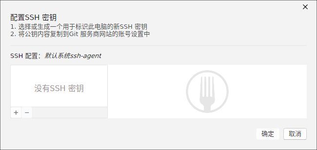
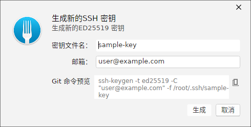
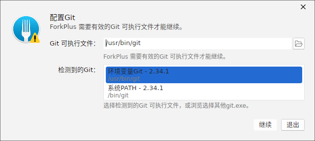
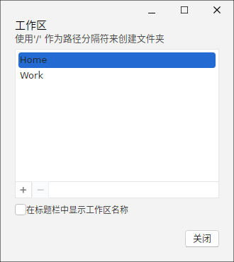

本章介绍 ForkPlus 运行所依赖的底层「环境」配置：SSH 密钥的查看/生成、Git 可执行文件的选择，以及工作区的划分。这些大多集中在「偏好设置 → 集成（Integration）」页，或在首次启动/首次需要时自动弹出。
SSH 密钥管理
通过「配置 SSH 密钥」窗口可集中查看与管理用于鉴权到 Git 服务商的 SSH 密钥。窗口顶部给出两步引导：
- 选择或生成一个用于标识此电脑的新 SSH 密钥；
- 将公钥内容复制到 Git 服务商网站的账号设置中。
窗口同时显示当前的 SSH 配置（默认使用系统 ssh-agent），左侧为密钥列表（可点击 ＋ / － 增删），右侧为所选密钥的详情预览区域。未配置任何密钥时显示「没有 SSH 密钥」的空态。

生成新的 SSH 密钥
在密钥管理窗口点击 ＋ 并选择「生成新密钥」，会打开「生成新的 SSH 密钥」对话框：
- 密钥文件名：指定生成到
~/.ssh/下的文件名（本图为sample-key）。 - 邮箱：作为密钥注释（
-C参数），便于在服务商处识别归属（本图为user@example.com）。 - Git 命令预览：实时合成将要执行的
ssh-keygen命令，右侧提供复制按钮，方便人工核验或手动执行。
ForkPlus 默认使用 ED25519 算法（现代椭圆曲线、密钥短且安全）。点击「生成」即调用对应命令创建密钥。

ssh-keygen -t ed25519 命令Git 实例配置
当 ForkPlus 无法定位到可用的 Git 可执行文件时，会弹出「配置 Git」窗口要求指定 Git 实例：
- Git 可执行文件：可直接填写路径，或点击右侧浏览图标手动选择。
- 检测到的 Git：自动扫出的候选（如「环境变量 Git」「系统 PATH」中的 Git），点选即可填入路径。
窗口会校验路径是否有效；若无效会提示「ForkPlus 需要有效的 Git 可执行文件才能继续」。确认识别后点「继续」，否则点「退出」。

工作区
ForkPlus 支持以「工作区」来组织仓库。通过「工作区」窗口（Configure Workspaces）可：
- 管理命名的工作区列表（如 Home、Work），支持 ＋ / － 增删。
- 使用 / 作为路径分隔符创建文件夹式的工作区层级。
- 勾选「在标题栏中显示工作区名称」，让当前所处工作区在窗口标题上一目了然。

小贴士：生成密钥后请把
~/.ssh/<文件名>.pub 的公钥内容粘贴到 GitHub / GitLab 等账号设置；后续拉取与推送即可通过该密钥完成 SSH 鉴权。